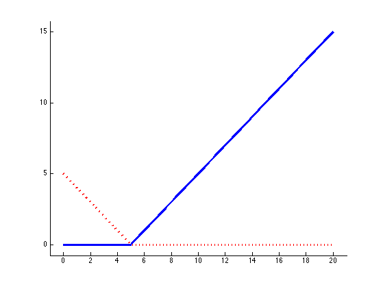
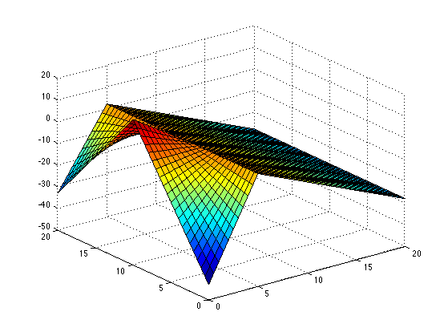

figure; hold on;
xs = 0:0.1:20;
plot(xs, max(0,xs-5), '-', 'linewidth', 3);
plot(xs, max(0,5-xs), 'r:', 'linewidth', 3);
axis_pct
printPmtkFigure('marsHinge')
figure;
xs = 0:0.1:20;
f = @(x) 25 -4*max(0,x-5) + 20*max(0,5-x);
plot(xs, f(xs), '-', 'linewidth', 3);
axis_pct
printPmtkFigure('mars1d')
figure;
f = @(x,y) 2 -2*max(0,x-5) + 3*max(0,5-x) ...
-1*max(0,y-10).*max(0,5-x) + ...
-1.2*max(0,10-y).*max(0,5-x);
[x, y] = meshgrid(0:0.5:20, 0:0.5:20);
z= reshape(f(x(:),y(:)), size(x));
surf(x,y,z);
printPmtkFigure('mars2d')


